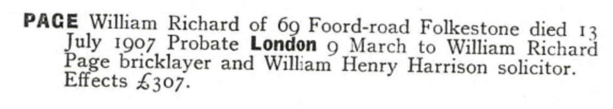
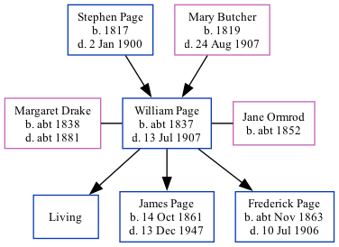

William Richard Page c1837 - 1907
[ Home ] | [ Calendar ] | [ Surnames Index ] | [ Family History ]A bricklayer and the child of Stephen Page (an agricultural laborer) and Mary Butcher, William Page, the first cousin three-times-removed on the father's side of <a href="I1.html">Nigel Horne</a>, was born in Folkestone, Kent, England <i>c.</i> 1837, was baptized there at Ss Mary & Eanswith Church on Nov 19, 1837 was married twice - to Margaret Drake (on Feb 3, 1860 in Folkestone) Jane Ormrod (on Aug 1, 1887 in Ashford, Kent, England, following the death of Margaret <i>c.</i> 1881)<span class="citation">4</span>. He had 3 children with Margaret Drake: William Richard, James Henry and Frederick Stephen.</p><p>Throughout his life, William lived in several places: at his birthplace on Jun 6, 1841<span class="citation">7</span>; at Sandfield House in Folkestone on Apr 2, 1871<span class="citation">8</span>; and on 69 Foord Road in Folkestone in 1907. <p>He died on Jul 13, 1907 at Victoria Hospital in Folkestone<span class="citation">1,2,3</span> and was buried at St John The Baptist, Folkestone on Jul 17, 1907<span class="citation">5,6</span>.
Parents
- Stephen was born in 1817
- Mary Julia was born in 1819
Children
- James Henry was born on Oct 14, 1861
- Frederick Stephen was born c. Nov 1863
Citations
- England & Wales Government Probate Death Index 1858-2019 - Findmypast
- England & Wales deaths 1837-2007 - Findmypast
- Kent, Folkestone Cheriton Road Cemetery Memorial Inscriptions - Findmypast
- England Marriages 1538-1973 - Findmypast
- Kent, Canterbury Archdeaconry burials 1538-1988 - Findmypast
- England Deaths & Burials 1538-1991 - Findmypast
- 1841 England, Wales & Scotland Census - Findmypast (was age 3)
- 1871 England, Wales & Scotland Census - Findmypast (was age 33 and the head of the household)
Media
William Richard Page - Probate

Kent, Canterbury Archdeaconry marriages 1538-1928 - GBPRS/CANT/M/97000146/1
England Marriages 1538-1973 - R_848276756
England Marriages 1538-1973 - R_848279895
England & Wales deaths 1837-2007 - BMD/D/1907/3/AZ/000221/250
Kent, Canterbury Archdeaconry burials 1538-1988 - GBPRS/CANT/D/95470811
1871 England, Wales & Scotland Census - GBC/1871/0014384649
England & Wales marriages 1837-2005 - BMD/M/1887/3/AZ/000209/008
Kent Baptisms - GBPRS/CANT/B/96147383
England Births & Baptisms 1538-1975 - R_22085477705
1841 England, Wales & Scotland Census - GBC/1841/0014078388
England & Wales Government Probate Death Index 1858-2019 - GBOR/GOVPROBATE/C/1908-1908/00040664
England Deaths & Burials 1538-1991 - R_276346650
Kent, Folkestone Cheriton Road Cemetery memorial inscriptions - GBPRS/KENT/MIS00006787
Kent marriages and banns - PRS/KENT/MAR/0012409/1
Family Tree
Generated by Ged2Site. Last updated on Jul 20, 2025